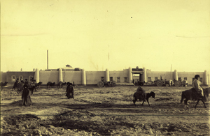

The Mennonites' "Great Trek" to Central Asia (1880–1884): the Ak Metchet community near Khiva
German-speaking Mennonite Christians trekked some 3,000 km across the steppe into Central Asia in 1880–1884. The migration had two causes: the end of their exemption from military service, and the preacher Claas Epp Jr.'s prophecy of the Second Coming of Christ. In 1884, at the invitation of the Khan of Khiva, Muhammad Rahim Khan II, Epp and his followers founded the village of Ak Metchet near Khiva. The community farmed, practiced fine crafts, and introduced photography; it was here that Khudaybergen Divanov learned to take photographs. Ak Metchet remained the last independent Mennonite community in the Soviet Union until its deportation to Tajikistan in 1935.

A little-known chapter of migration into today's Uzbekistan
One of the least-known chapters of migration history concerns the territory of present-day Uzbekistan: German-speaking Mennonite Christians who trekked into Central Asia in 1880–1884 and founded the village of Ak Metchet (German "Ak Metchet," "White Mosque" / Oq Machit) near Khiva. This community lasted until 1935. The religious prophecy described below is reported history: it is stated neutrally as a fact about what the Mennonites themselves believed and acted on, as their motives, not as a theological claim.
Two reasons for the migration
The first reason was the end of the exemption from military service. The Mennonites had settled in the Russian Empire under Catherine the Great's 1763 Manifesto, with a Privilegium exempting them from military service. Under War Minister Dmitry Milyutin, universal military conscription took effect on 1 January 1874; the government had already announced in 1870 that it would phase out the special privileges. From 1880 an alternative forestry service (Forsteidienst) was offered and most accepted it — but about a third of Russia's Mennonites emigrated (roughly 7,000 to Manitoba, Canada), while a smaller group headed east into Central Asia.
The second reason was the millennial prophecy of Claas Epp Jr. (21 September 1838 – 19 January 1913), a preacher from the Am Trakt (Trakt) settlement in Samara, who taught that believers should flee east to a place of refuge to await the Second Coming of Christ, which he predicted for 1889 (some accounts specify 8 March 1889). When it did not occur, he recalculated to 1891, and eventually made claims about himself that split his following.

The Great Trek (1880–1884)
The emigrants came mainly from the Am Trakt (Samara/Volga) and Molotschna colonies. The standard scholarly account of this event is Fred Richard Belk's "The Great Trek of the Russian Mennonites to Central Asia, 1880–1884" (Herald Press, 1976). The trek began in summer/autumn 1880 in about five wagon trains totaling roughly 600 people — a journey of about 3,000 km across the steppe. The Molotschna group's third wagon train (80 families) left Waldheim on 1 August 1880 and reached Tashkent on 2 December 1880 — an 18-week trek.
Hardships and the split
Epp's group wintered in 1880–81 in the Muslim village of Serabulak (the hosts let them worship in the mosque); during about nine months of waiting near Tashkent roughly 80 people died. When it turned out that the forestry-service option also applied in Russia's Asian territories, the group fractured: some accepted it and settled at Aulie-Ata (today Taraz, Kazakhstan, about 240 km northeast of Tashkent); Claas Epp led about 60 families onward toward Bukhara and ultimately to Khiva.
In the Khanate of Khiva: Ak Metchet (1884)
In 1884 the Khan of Khiva, Muhammad Rahim Khan II (full style Sayyid Muhammad Rahim Bahadur Khan II, reigned 1864–1910), invited the Mennonite pilgrims to settle in a royal garden a few miles (about 13 km) south of Khiva, within the Khanate of Khiva (Khorezm; today Uzbekistan). Claas Epp and his followers founded the village of Ak Metchet ("White Mosque") in 1884. One single-source detail must be flagged: the precise founding date of "16 April 1884" and the figure of "about 38 families" rest mainly on GAMEO — so the bare year 1884 and Claas Epp as founder stand as solid facts, while the exact day and number of families are given "according to GAMEO."
What the community did
The community engaged in intensive farming and orchards/gardening, fine woodworking and craftsmanship, and introduced new technology, including photography. Locals long remembered their craftsmanship and their agricultural productivity.
Photography and Khudaybergen Divanov
The Mennonite schoolteacher Wilhelm Penner at Ak Metchet mentored a young Uzbek, Khudaybergen Divanov, in photography; Divanov became known as "the father of Uzbek photography" and a pioneer of Uzbek cinema. He learned German from the Mennonites at the White Mosque, later visited St. Petersburg in 1908, acquired a Pathé camera, and produced early films (for example, "Monuments of Architecture of our Region," 1913; "Types of Turkestan," 1916). His death year differs across sources (1938 vs. 1940); it is therefore best written as "1879–1938/1940" or "the late 1930s."
The end of the community — the 1935 deportation
Because of its isolation, Ak Metchet was largely ignored by Moscow and became the last functioning independent Mennonite community in the Soviet Union, keeping its own church and ethnic school. The community repeatedly refused to join a collective farm; ten leaders were tried and sentenced to death (later commuted to hard labor). In 1935 (reported as 15 April) — after an attempt to arrest the village men failed when the women physically resisted — the entire community was deported to Tajikistan (a barren plain south of Dushanbe). Many later worked on collective farms there; some descendants emigrated to Germany in the Soviet Union's final years.
Legacy
This German Mennonite community lived beside the Uzbek population of Khorezm for about half a century (1884–1935) and left a mark remembered in local history and in the story of early Uzbek photography — stated here as verified facts only.

Sources
- GAMEO — Global Anabaptist Mennonite Encyclopedia Online: Ak Metchet / Great Trek (founding 1884; deportation 1935)
- Wikipedia (EN) — Claas Epp Jr. (1838–1913; Am Trakt; prophecy 1889; Great Trek; ~60 families to Khiva)
- Fred R. Belk, 'The Great Trek of the Russian Mennonites to Central Asia 1880–1884' (Herald Press, 1976)
- Wikipedia (EN) — Muhammad Rahim Khan II of Khiva (reigned 1864–1910; invited the Mennonites; endorsed photography)
- Wikipedia (EN) — Khudaibergen Devanov (father of Uzbek photography; mentored by Wilhelm Penner at the White Mosque)
- Mennonite Life (Bethel College) — James Ratliff on Ak Metchet (last independent Mennonite community in the USSR; deportation 1935)
- Uzbek Journeys — Mennonites in Khiva, 1880–1935